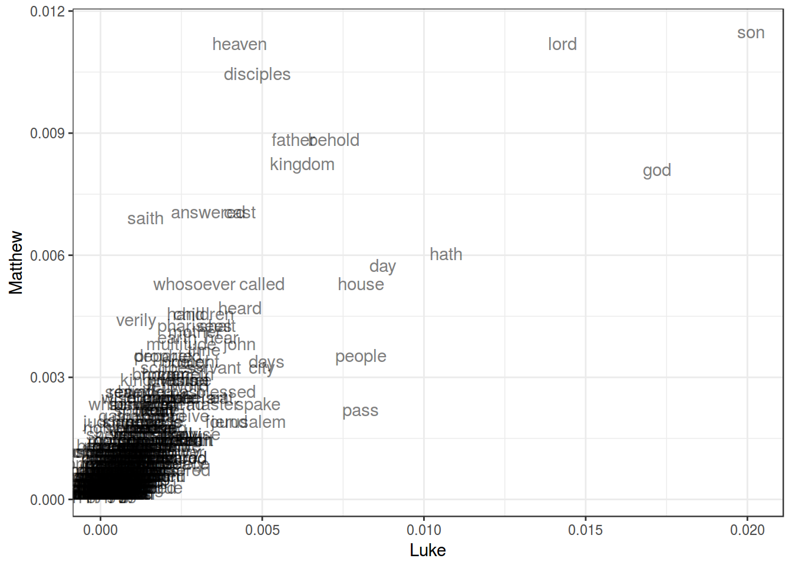

Даны частотности слов из английского четвероевангелия (https://goo.gl/mdBVVe). Приведите примеры слов, которые типичны для одних евангелий, и реже встречаются в других. Постройте визуализацию.
library(tidyverse)
df <- read.csv("https://goo.gl/mdBVVe", stringsAsFactors = FALSE)
df %>%
ggplot(aes(Luke, Matthew, label = word))+
geom_text(alpha = 0.5)+
theme_bw()
Это гипотетическое исследование детского изучения языка. Мы хотим понять влияет ли количество часов проведенных перед телевизором на развитие языковых способностей у двухлетних детей.
Данные: https://goo.gl/MnTRbt
Постройте линейную регрессию от всех предикторов. Укажите Adjusted R-squared. Предскажите cdi на основе построенной модели, для ребенка, который смотрит телевизор аж 25 часов в неделю.
df <- read.csv("https://goo.gl/MnTRbt")
fit <- lm(data = df, cdi~tv.hours)
summary(fit)##
## Call:
## lm(formula = cdi ~ tv.hours, data = df)
##
## Residuals:
## Min 1Q Median 3Q Max
## -2.69069 -0.69069 -0.04074 0.63428 3.15936
##
## Coefficients:
## Estimate Std. Error t value Pr(>|t|)
## (Intercept) 101.64004 0.38634 263.081 < 2e-16 ***
## tv.hours -0.14995 0.03123 -4.802 7.44e-06 ***
## ---
## Signif. codes: 0 '***' 0.001 '**' 0.01 '*' 0.05 '.' 0.1 ' ' 1
##
## Residual standard error: 1.134 on 78 degrees of freedom
## Multiple R-squared: 0.2282, Adjusted R-squared: 0.2183
## F-statistic: 23.06 on 1 and 78 DF, p-value: 7.438e-06predict(fit, data.frame(tv.hours = 25))## 1
## 97.89129